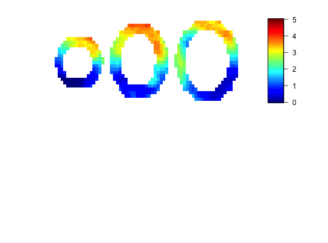

Spline analysis of cardiovascular magnetic resonance imaging
cmr.local(data, mask, input, quantiles = c(0.25, 0.75))
list of mbf (point estimation) and ci (credible interval)
library(cmr) data(sim) local.mbf=array(NA,c(30,30,3)) local.ci=array(NA,c(30,30,3)) for (i in 1:3) { mask=array(NA,c(30,30)) mask[data.data[,,i,1]!=0]=1 temp=cmr.local(data.data[,,i,],mask,aif) local.mbf[,,i]=t(as.matrix(temp$mbf)) local.ci[,,i]=t(as.matrix(temp$ci)) }#> Error in mask[data.data[, , i, 1] != 0] = 1: Objekt 'data.data' nicht gefunden#> Warning: kein nicht-fehlendes Argument für min; gebe Inf zurück#> Warning: kein nicht-fehlendes Argument für max; gebe -Inf zurück#> Warning: kein nicht-fehlendes Argument für min; gebe Inf zurück#> Warning: kein nicht-fehlendes Argument für max; gebe -Inf zurück#> Warning: kein nicht-fehlendes Argument für min; gebe Inf zurück#> Warning: kein nicht-fehlendes Argument für max; gebe -Inf zurück#> Error in xrange[1]:xrange[2]: Resultat wäre zu langer Vektor